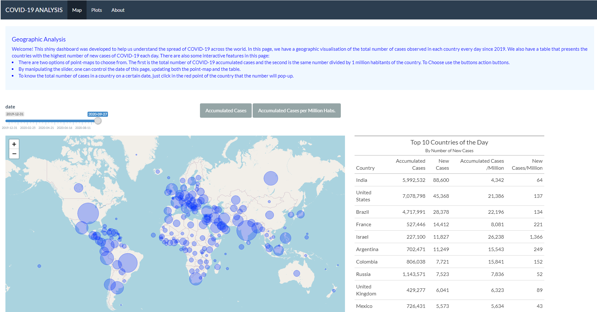

Firts Page of the APP
Recently I have developed a Shiny APP to explore Covid-19 data for the unit Communicating with Data - ETC5523 at Monash University. In this blog post I will present the APP, explain the features and make a reflection on what I think could be improved.
The app was developed having a navbar and user may click in 2 webpages for interaction and the last one is the about section. The main purpose of the app is to give the user the ability to observe the evolution of the pandemic throughout the year of 2020 comparing numbers all countries in the world countries. To do so, we use different tools such as maps, plots and tables. Multiple libraries were also used for data manipulation, visualization and formatting such as dplyr, ggplot2, plotly, gt, leaflet and much more.
The dataset is a multivariate time-series that comprises multiple features from the period of the 31th of December, 2019 to the 27th of semptember of 2020. It has multiple variables of every country. Some directly related to the Covid-19 such as the total number of deaths, total number of deaths per million habitats number of tests per day and positive rate of tests. Others relate to social and economic variables that were not explored in this project. The dataset was sourced from the website Our World in Data. The website is from the organization with the same name, based on Oxford University.
On the top of the page instructions can be found on how to operate and interact with the features. Scrolling down, there is a world dot-density map and an interactive table. These features are connected to input objects from Shiny in the following manner: - An slider input chooses the day of the year that will be exposed both in the dot-density map and the table. - Action buttons are used to select what variable will be presented in the dot-density map. The dot density map was created with leaflet and represents the most affected countries by the pandemic. The size of the dots is proportional to to the variable chosen in the action button, which can be either Accumulated Number of Cases or Accumulated Number of Cases per Million Habitants.
In the table next to the map-plot, the user will know the top-10 countries with more new cases in the particular chosen day in the sliderinput. Other variables that are also observed are new cases per 1 per Million Habitants, Accumulated Number of Cases and Accumulated Number of Cases per Million Habitants
In the second page we can analyse the evolution of a range of eight variables such as total deaths, total cases and more related to COVID-19. Stacked barplots were use where each of the bars referes to a country. When opening this webpage the chosen countries are the US, India and Brazil, 3 of the most affected countries by the pandemic. The user can choose with the select box as many countries as he wants. To analyse a unique day of a country you can hover over or click in the bar. When clicking it should color in blue the country. The plots were made with plotly.